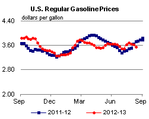
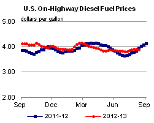
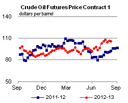
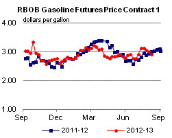
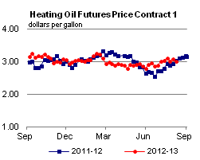
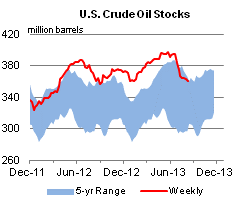
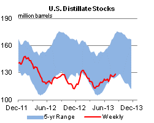
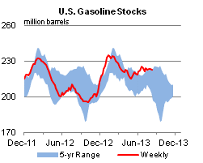
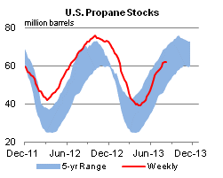

Released: August 14, 2013
Next Release: August 21, 2013
New Traffic Patterns Emerge to Supply Crude Oil to West Coast Refiners
In many parts of the country, drivers frequently encounter road construction and a sign that says "New Traffic Patterns" as highway infrastructure shifts. New traffic patterns are emerging also in crude oil movements.
There has been much discussion about the resurgence in U.S. crude oil production and the resulting abundance of crude in the Midcontinent (PADD 2 and PADD 4) and the Gulf Coast (PADD 3).
On the West Coast (PADD 5), however, crude oil production has been declining, especially in Alaska and California, and as a result, crude oil supply patterns to West Coast refineries have been changing. Currently, there are no major pipelines moving crude to the West Coast from east of the Rockies. Marine transport to the West Coast involves a lengthy and expensive trip from the U.S. Gulf Coast through the Panama Canal.
Crude-by-rail, though, is becoming a viable alternative. Trade press and company reports indicate that crude-by-rail infrastructure on the West Coast has been expanding, with more planned. Further, while EIA currently does not collect data on domestic movements of crude oil and products on railroads, an examination of EIA data reveals that there is a growing supply of crude to PADD 5 that is not explicitly accounted for by production, imports, or other transfers. This unaccounted-for crude is likely crude oil delivered via railroad to refineries on the West Coast.
{kind=link}
Figure 1 illustrates unaccounted-for supply as the difference between PADD 5 refinery runs and stock change and the sum of imports, Alaska production, and other PADD 5 production. Before 2012, the data show a slight unaccounted-for supply, in the range of -20,000 (overestimation) to 70,000 (underestimation) barrels per day (bbl/d) (Figure 1). Underestimation of supply can be interpreted as domestically produced crude oil shipped to PADD 5 from other PADDs via modes of transport not captured in EIA surveys, mainly railroad and truck. Beginning in 2012, the underestimated crude supply increased significantly, reaching more than 100,000 bbl/d in the early months of 2013. This unaccounted-for supply is likely crude delivered via rail.
The interpretation of unaccounted-for supply as an increase in rail shipments is consistent with trade press reports. The refining center in Washington state, the closest destination for both Canadian and Bakken crudes, is where most of the refineries have built or are in the process of building rail unloading facilities. Tesoro, the largest refiner on the West Coast, opened a 40,000-bbl/d crude-by-rail unloading facility at its Anacortes, Washington, refinery complex in 2012. The U.S. Oil & Refining Company's Tacoma, Washington, refinery was the latest to open a similar-sized crude-by-rail unloading operation in Washington. Tesoro is also in the process of securing approval for a 120,000-bbl/d rail-to-barge terminal in Vancouver, Washington. Alon USA Energy and Valero are in the process of expanding facilities and securing approval to build new crude-by-rail unloading facilities at their California refineries.
In addition to refiners, merchant terminal operators, such as Westway Terminals, NuStar Energy, and Plains All American, are also investing in new rail-to-barge and rail unloading facilities. Global Partners LP, a midstream energy logistics and marketing company, recently purchased an existing petroleum products terminal in Portland, Oregon, that is linked via rail to Global-owned crude-by-rail loading facilities in North Dakota.
As the First Transcontinental Railroad united the West with the eastern railroad system in 1869, railroads are now doing the same for crude oil markets in the East and West, overcoming great distances and the Continental Divide to deliver crude production to markets where it is most highly valued.
Background on PADD 5 Refining
There are three major refining centers in PADD 5: Washington state, San Francisco, and Los Angeles. Historically, the refineries in Washington and California were supplied from PADD 5 crude oil production and imports (Figure 2). Alaska and California production is transported by marine vessel and pipeline, respectively, to refineries. However, production in both Alaska and California has been in decline over the past decade. In 2012, PADD 5 production represented 48 percent of crude runs at the region's refineries, down from 59 percent in 2005. As PADD 5 production declined over this period, waterborne imports of crude oil increased. In 2012, imports were 51 percent of total PADD 5 crude supply, an increase from 40 percent in 2005. The major sources of crude imported into the West Coast thus far in 2013 are Canada, Saudi Arabia, Iraq, and Ecuador. Because the West Coast relies so much on imports of crude oil, similar to the United States overall, crude prices in the region, including those for Alaska and California, have historically been linked to seaborne Brent crude oil prices rather than to inland West Texas Intermediate prices at Cushing, Oklahoma.
{kind=link}
Gasoline and diesel fuel prices both decrease again
The U.S. average retail price of regular gasoline decreased seven cents to $3.56 per gallon as of August 12, 2013, 16 cents lower than last year at this time. Prices decreased in all regions except the Rocky Mountains, where the price increased one cent to $3.64 per gallon. The largest decrease came in the Midwest, where the price fell 11 cents to $3.48 per gallon. The East and Gulf Coast prices both fell six cents, to $3.57 per gallon and $3.39 per gallon, respectively. Rounding out the regions, the West Coast price declined five cents to $3.84 per gallon.
The national average diesel fuel price decreased one cent to $3.90 per gallon, seven cents lower than last year at this time. Prices decreased in all regions, led by two-cent drops in the Midwest and the Gulf Coast, to $3.86 per gallon and $3.82 per gallon, respectively. On the East and West Coast the price is down one cent, to $3.91 per gallon and $4.05 per gallon, respectively. Rounding out the regions, the Rocky Mountain price declined less than one cent to remain $3.93 per gallon.
Propane inventories slightly higher
Total U.S. inventories of propane rose slightly from last week to end at 61.9 million barrels, but are 7.2 million barrels (10.4 percent) lower than the same period a year ago. Midwest inventories gained by 0.6 million barrels, while Rocky Mountain/West Coast inventories increased by 0.1 million barrels. Gulf Coast stocks decreased by 0.6 million barrels, while East Coast inventories remained flat. Propylene non-fuel-use inventories represented 4.9 percent of total propane inventories.
Text from the previous editions of This Week In Petroleum is accessible through a link at the top right-hand corner of this page.
|  |  | ||||||
| Retail Data | Change From Last | Retail Data | Change From Last | ||||
| 08/12/13 | Week | Year | 08/12/13 | Week | Year | ||
| Gasoline | 3.561 | Diesel Fuel | 3.896 | ||||
|  |  | ||||||||||||||||||||||||||
|
 | ||||||||||||||||||||||||||
| *Note: Crude Oil Price in Dollars per Barrel. | |||||||||||||||||||||||||||
|  |  | ||||||
|  |  | ||||||
| Stocks Data | Change From Last | Stocks Data | Change From Last | ||||
| 08/09/13 | Week | Year | 08/09/13 | Week | Year | ||
| Crude Oil | 360.5 | Distillate | 128.5 | ||||
| Gasoline | 222.4 | Propane | 61.851 | ||||